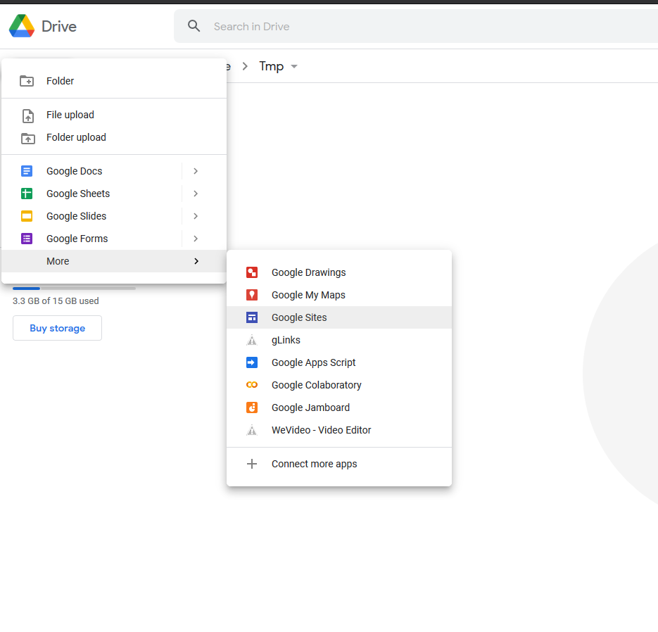
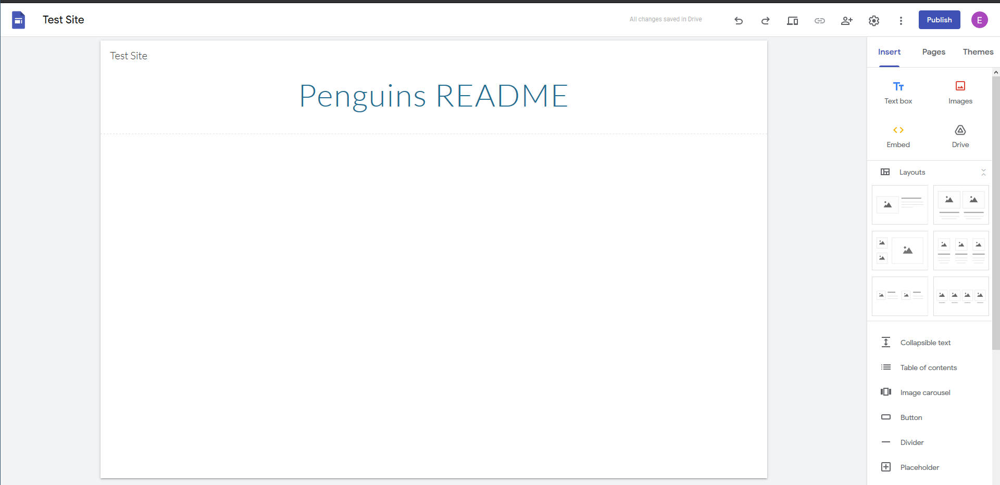
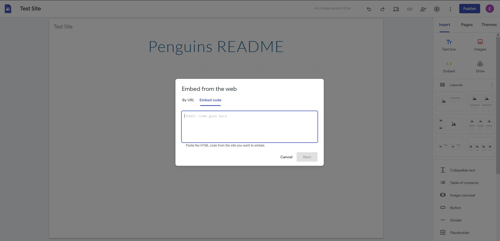
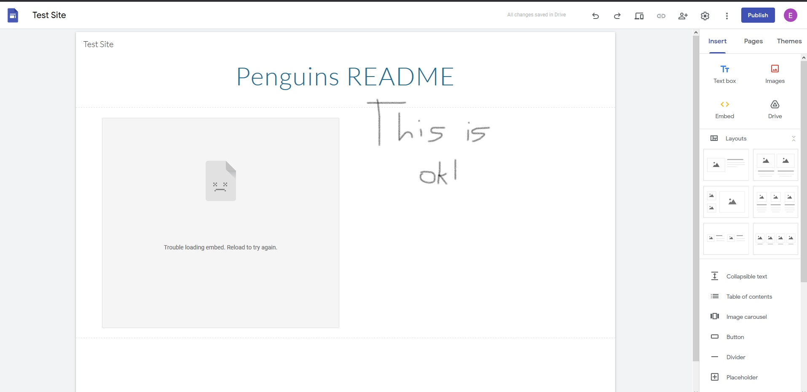
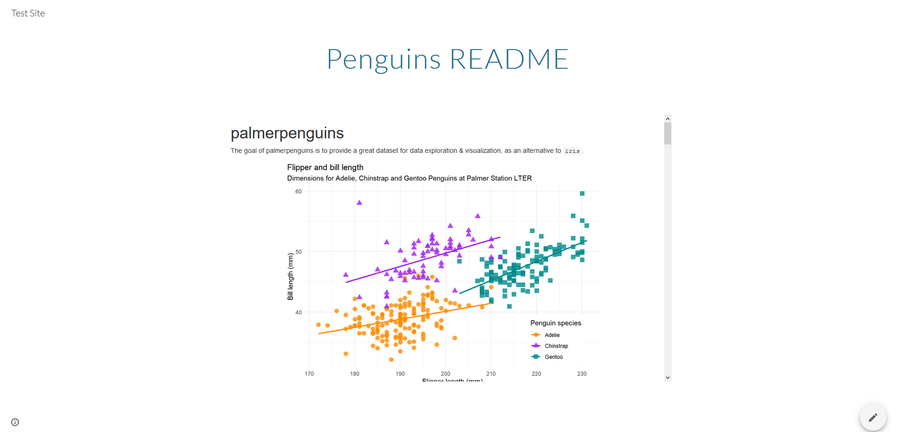

This post – and the digging behind it – was inspired by Allison Horst and Jacqueline Nolis’s recent-ish blog post about conflicts between data scientists and the teams they’ may be’re joining/supporting. It’s a great post, and I’d recommend it to anyone, whether you’re looking for a job, new to a job, or relatively senior in your organization. When I read it, the post struck a chord with me and led me to do some introspection about how much change I should be initiating/pushing for as a new employee in my organization vs how much I should be adapting to established workflows.
Basically, this was my response:

Google Sites to the Rescue (Sort of)
That said, CCPS widely uses Google Sites. The vast majority of the people who work in CCPS aren’t web developers or analysts; it is, after all, a school division and not a tech company. And Google Sites provides a platform for all sorts of people in the organization to create good-looking sites, so from that perspective, it makes sense that we use Google Sites widely so that teachers, principals, and other non-technical folks can create websites. Given that, I wanted to see if there was a way to take the html reports and products I was making and host them on Google Sites, which would make my work much more integrated into established practices.
And so after a lot of Googling and my hopes being dashed by a dramatic change sometime in the past 3-4 years from “classic Google Sites” to “new Google Sites,” I finally arrived at a solution that, although not ideal, seems to do generally what I want it to, which is what I’ll share below.
Rendering Rmd Content to Google Sites
The rest of this post will walk through how to create an html report using Rmarkdown and then “publish” it to Google Sites. To illustrate this, I’m going to use the README for Allison Horst’s {palmerpenguins} package as the example report to publish.
Step 1: Create Your Report
Maybe obviously, the first thing you want to do is write and knit your report as an html file. Again, this can be any content you want, but I’m using the {palmerpenguins} README here. Another note is that, since we’re using html, we can include features like {reactable} tables or {leaflet} maps if we want, although those aren’t included here. We could also knit this as a {distill} article or add whatever styling/css we want.
Step 2: Create A Google Site
Once you have your report created, you can create the Google Site in Google Drive, like so:

Or you can navigate to a site you already own/can edit.
n.b. that I’m not really going to get into the weeds of working in Google Sites because that’s not really the point of this post, plus I’m not an expert myself, although basic usage is fairly straightforward.
Step 3: Create a Page in Google Sites to House Your Report
The details of what this means will depend on the layout of your site, but essentially you want to create a page that can house the report you just knit. You might end up with something that looks like this – a basic banner and then a blank body:

Step 4: View the Source Code of Your HTML Report
Next, you want to get to the source code of the html file you created. You can do this by either opening the file with a browser and then inspecting the page source (the exact process for doing this will depend on which browser you use), or you can open the html file in RStudio (or another text editor).
Once you’re there, select and copy all of the source code
Step 5: Embed the Source Code in Your Google Sites Page
Returning to the page where we want this report to live on our Google Site, we want to select the “Embed” option from the “Insert” menu on the right-hand side. You can also double left-click a blank part of your web page to have options pop up (& you can select “Embed” from there).
Once we click the “Embed” button, a dialogue box pops up:

And we want to select the “Embed code” option. Once we’re here, we want to paste in all of the html source code from our report file. Then, click “Next,” and “Insert”
Don’t stress if you see a box that says “trouble loading embed. Reload to try again.” (see below) The content should load once you publish your site.

You also probably want to resize & reposition the embedded content at this point. As far as I can tell, this is only possible via dragging, and there aren’t parameters you can set anywhere in the site to ensure consistent alignment (although there are grid lines to guide you).
Step 6: Publish Your Site
Now we’re ready to publish our site. Click the “Publish” button in the upper-right of the screen and select the options you want in the popup box. If you’re publishing from a Google account that belongs to an organization, your options may be pre-specified. For instance, when I publish from my work account, the default option is to allow only internal users to see the site (which is what I want in most cases).
Once you’ve published your site, you can navigate to it and see the following:

If you want to navigate to the example site I just created, you can find it here.
Closing Thoughts
I came to this process as a way to publish reports & other data tools (e.g. {crosstalk} “dashboards”) I was creating through Google Sites, since that’s what my organization uses. The benefits of this approach are that I’m integrating my work into a tool that others in CCPS are familiar with, and I’m not being a nuisance and asking our technology department to stand up a new tool/platform that only 1 or 2 people would use to create content. And both of these feel like pretty big wins to me from an organizational perspective.
That said, there are obviously some drawbacks and situations when I wouldn’t do this. Publishing (and updating) anything is a fairly manual process since you’re copy/pasting html code, and as far as I can tell, there’s no way to automate this. So if you have reports/products that need to be updated daily, this might not be the best approach for you. Similarly, if you’re writing a bunch of parameterized reports and need a place to publish all of them, this process could get tedious very quickly. Overall, I think this publishing to Google Sites works best if you’re publishing static reports that don’t need to be updated too often (e.g. annual/semi annual progress reports; one-off project reports/special requests).
Anyway, hopefully this walkthrough/discussion helps someone who’s in a similar position, and thanks again to Allison Horst & Jacqueline Nolis for the blog that inspired me to delve into this more.
Reuse
Citation
@online{ekholm2021,
author = {Eric Ekholm},
title = {Publishing {Rmarkdown} to {Google} {Sites}},
date = {2021-05-03},
url = {https://www.ericekholm.com/posts/publishing-rmarkdown-to-google-sites},
langid = {en}
}